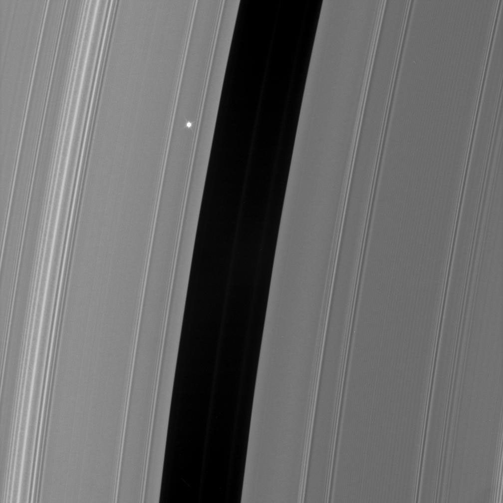

IMAGE: Aldebaran | IMAGE CREDIT: NASA/JPL/Space Science Institute
Dusty's Log Entry:
- Type: supergiant
- Temperature: about 3,500 - 4,500 K
- Mass: about 8 - 40 Suns
- Lifespan: a million years in this stage
- What's Next: core-collapse supernova
Amongst the largest stars known by size. Main sequence stars like massive white or blue stars become red supergiants after swelling enormously. These stars are cool, but their large surface makes them bright Similar to AGB Stars, their outer layers are loose and wind can blow away many of these layers. As such they can lose their brightness. A red supergiants life is short, so whenever they collapse, these stars turn into Type II supernova.
Example of the red supergiant includes Aldebaran.